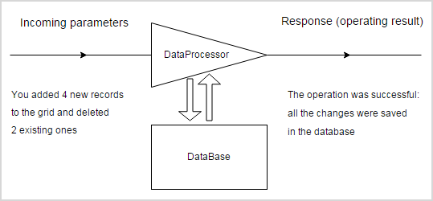

If you use DHTMLX PHP connectors - please, refer to PHP Connector.
The default package contains an example of the server-side code for PHP (by additional request the similar code for Java/ColdFusion/C#.Net/RubyOnRails can be sent).
In this chapter we'd like to show you dataProcessor in details (a bit changed image from the main page will be to the point).
Let's take a look at the example. You have some data stored in a database and want to represent them in a grid with the possibility to edit them. Let's look inside and learn what role dataProcessor plays here.

First of all, dataProcessor gets the data (all the parameters are part of the GET or POST requests).
The setTransactionMode method is used to set the desired transaction mode.
There are several types of requests:
1) a separate request for each record
dp.setTransactionMode("POST", false);
Request values are:
Depending on the value of "!nativeeditor_status" the related section of the server-side logic is triggered.
2) several records in one request
dp.setTransactionMode("POST", true);
Request values are:
A dataprocessor request can pass any number of data properties. An id is a mandatory parameter, other data properties are completely optional.
3) a request based on the rules of REST API
dp.setTransactionMode("REST");
4) a request sent by dataProcessor in the JSON mode
dp.setTransactionMode("JSON");
An example of Scheduler request values for a separate request for each record is given below:
The following example presents Scheduler request values in case of several records in one request:
The request values for a grid row update are:
The request values for a tree branch update are:
Then dataProcessor processes the incoming parameters, makes all the necessary operations in the database and returns the response.
The response must be a valid XML or JSON in order to be processed correctly.
XML response must have the following format:
<data>
<action type="some" sid="some" tid="some" />
</data>
where:
Since the version 4.1 dataProcessor can work with JSON responses.
A simple JSON response should look as:
{"status":"ok"}
//or
{"tid":121}
A more complex example can be as follows:
{"action":"updated", "sid":15, "tid":15}
To return an error in response of JSON format, use the following code:
{"action":"error", ...}
There are 5 predefined types of response:
dataProcessor already contains the logic that defines the default processing of the stated types of response (in other words, actions). You can attach custom handlers to add some extra reaction but, in general, you needn't care about the processing of these actions.
In some cases you may need to return some additional information (the most common use-case - an error during a DB operation). To dispose a problem you can use an additional response type:
function some_error(node)
{
alert(node.getAttribute("type")); // 'my_error'
alert(node.firstChild.data); // Details
return false;
}
dp.defineAction("error",some_error);
where some_error - a custom function which will be called when the response of "my_error" type is received.
<data>
<action type="my_error" sid="id" tid="id">Details</action>
</data>